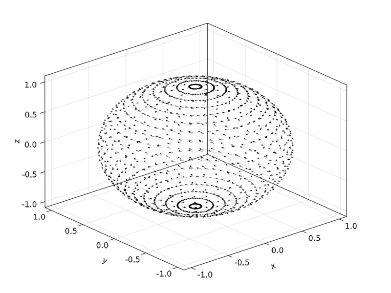
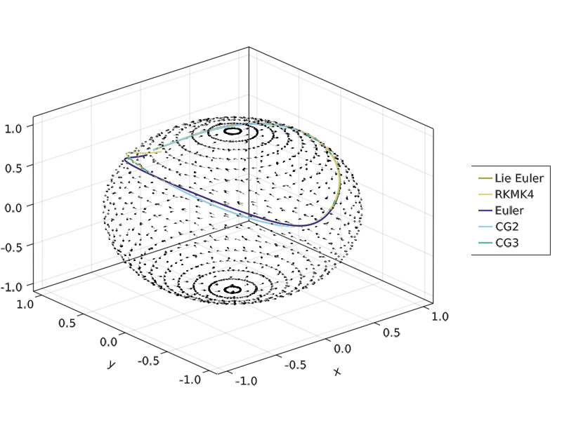

Examples
We take a look at the simple example from
In the following code an ODE on a sphere is solved the introductionary example from the lecture notes by E. Hairer.
We solve the ODE system on the sphere $\mathbb S^2$ given by
\[\begin{pmatrix} \dot x \\ \dot y \\ \dot z \end{pmatrix} = \begin{pmatrix} 0 & z/I_3 & -y/I_2 \\ -z/I_3 & 0 & x/I_1 \\ y/I_2& -x/I_1 & 0 \end{pmatrix} \begin{pmatrix} x \\ y \\ z \end{pmatrix}\]
using ManifoldDiffEq, OrdinaryDiffEq, Manifolds
using GLMakie, LinearAlgebra, Colors
n = 25
θ = [0;(0.5:n-0.5)/n;1]
φ = [(0:2n-2)*2/(2n-1);2]
x = [cospi(φ)*sinpi(θ) for θ in θ, φ in φ]
y = [sinpi(φ)*sinpi(θ) for θ in θ, φ in φ]
z = [cospi(θ) for θ in θ, φ in φ]
function f2(x, y, z)
Iv = [1.6, 1.0, 2/3]
p = [x, y, z]
A = [0 -z y; z 0 -x; -y x 0]
return A * (p./Iv)
end
tans = f2.(vec(x), vec(y), vec(z))
u = [a[1] for a in tans]
v = [a[2] for a in tans]
w = [a[3] for a in tans]
f = Figure();
Axis3(f[1,1])
arr = GLMakie.arrows!(
vec(x), vec(y), vec(z), u, v, w;
arrowsize = 0.02, linecolor = (:gray, 0.7), linewidth = 0.0075, lengthscale = 0.1
)
save("docs/src/assets/img/first_example_vector_field.png", f)which looks like

Let's set up the manifold, the sphere and two different types of problems/solvers A first one that uses the Lie group action of the Special orthogonal group acting on data with 2 solvers and direct solvers on the sphere, using 3 other solvers using the idea of frozen coefficients.
S2 = Manifolds.Sphere(2)
u0 = [0.0, sqrt(9/10), sqrt(1/10)]
tspan = (0, 20.0)
A_lie = ManifoldDiffEq.LieManifoldDiffEqOperator{Float64}() do u, p, t
return hat(SpecialOrthogonal(3), Matrix(I(3)), cross(u, f2(u...)))
end
prob_lie = ManifoldDiffEq.ManifoldODEProblem(A_lie, u0, tspan, S2)
A_frozen = ManifoldDiffEq.FrozenManifoldDiffEqOperator{Float64}() do u, p, t
return f2(u...)
end
prob_frozen = ManifoldDiffEq.ManifoldODEProblem(A_frozen, u0, tspan, S2)
action = RotationAction(Euclidean(3), SpecialOrthogonal(3))
alg_lie_euler = ManifoldDiffEq.ManifoldLieEuler(S2, ExponentialRetraction(), action)
alg_lie_rkmk4 = ManifoldDiffEq.RKMK4(S2, ExponentialRetraction(), action)
alg_manifold_euler = ManifoldDiffEq.ManifoldEuler(S2, ExponentialRetraction())
alg_cg2 = ManifoldDiffEq.CG2(S2, ExponentialRetraction())
alg_cg23 = ManifoldDiffEq.CG2_3(S2, ExponentialRetraction())
alg_cg3 = ManifoldDiffEq.CG3(S2, ExponentialRetraction())
dt = 0.1
sol_lie = solve(prob_lie, alg_lie_euler, dt = dt)
sol_rkmk4 = solve(prob_lie, alg_lie_rkmk4, dt = dt)
sol_frozen = solve(prob_frozen, alg_manifold_euler, dt=dt)
sol_frozen_cg2 = solve(prob_frozen, alg_cg2, dt = dt)
sol_frozen_cg23 = solve(prob_frozen, alg_cg23)
sol_frozen_cg3 = solve(prob_frozen, alg_cg3, dt = dt)
plot_sol(sol, col) = GLMakie.lines!([u[1] for u in sol.u], [u[2] for u in sol.u], [u[3] for u in sol.u]; linewidth = 2, color=col)
l1 = plot_sol(sol_lie, colorant"#999933")
l2 = plot_sol(sol_rkmk4, colorant"#DDCC77")
l3 = plot_sol(sol_frozen, colorant"#332288")
l4 = plot_sol(sol_frozen_cg2, colorant"#CCEE88")
l5 = plot_sol(sol_frozen_cg23, colorant"#88CCEE")
l6 = plot_sol(sol_frozen_cg3, colorant"#44AA99")
Legend(f[1, 2],
[l1, l2, l3, l4, l5, l6],
["Lie Euler", "RKMK4", "Euler", "CG2", "CG2(3)", "CG3"]
)
save("docs/src/assets/img/first_example_solutions.png", f)And the solutions look like

Note that alg_cg23 uses adaptive time stepping.